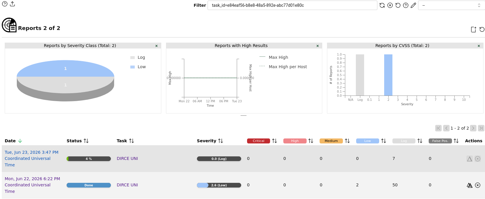

Auditoría Integral Purple Team: Gestión de Vulnerabilidades e Ingeniería de Detección
Este laboratorio práctico ha sido diseñado bajo una metodología híbrida de seguridad (Purple Team) para evaluar de forma exhaustiva la superficie de ataque y la resiliencia del dominio gubernamental/académico alumnos.uni.edu.pe (IP: 190.105.247.141). La auditoría abarca de manera secuencial desde la recolección de inteligencia pasiva basada en fuentes abiertas (OSINT) hasta el análisis activo de vulnerabilidades, permitiendo correlacionar vectores de exposición tecnológica reales con controles de monitoreo en Centros de Operaciones de Seguridad (SOC).
El núcleo ofensivo del proyecto consistió en automatizar la identificación de fallos de configuración y software desactualizado mediante el motor empresarial Greenbone OpenVAS, utilizando un perfil de escaneo optimizado (Full and Fast) adaptado a las capacidades físicas del entorno virtual. Paralelamente, la fase defensiva complementa el ciclo validando la integridad del tráfico criptográfico con Wireshark y desplegando un Sistema de Detección de Intrusos (IDS) con Snort, demostrando una visibilidad de 360 grados sobre cómo las actividades de reconocimiento dejan firmas detectables en los firewalls y perímetros de red corporativos.
Cuadro de Mando del Proyecto (Cybersecurity Framework)
| Fase de la Auditoría | Herramienta Principal | Tipo de Enfoque | Resultado / Entregable |
|---|---|---|---|
| 1. Reconocimiento Pasivo | Shodan (OSINT) | Pasivo (No intrusivo) | Mapeo de banners y exposición superficial. |
| 2. Escaneo de Puertos y Servicios | Nmap | Activo (Intrusivo) | Confirmación de puerto 443/TCP abierto (Apache). |
| 3. Gestión de Vulnerabilidades | Greenbone OpenVAS | Activo (Intrusivo) | Detección de 2 fallos de severidad Baja (2.6 Low). |
| 4. Análisis de Protocolos | Wireshark | Inspección de Paquetes | Captura y análisis del Handshake SSL/TLS (.pcapng). |
| 5. Ingeniería de Detección | Snort (IDS) | Defensivo (Blue Team) | Creación de reglas de alerta ante escaneos ruidosos. |
Fase 1: Inteligencia de Fuentes Abiertas (OSINT) con Shodan
Análisis del rastro digital y metadatos expuestos públicamente en internet sobre el host objetivo sin interactuar directamente con la red de la universidad.
Análisis de Superficie de Ataque Pasiva
A través de la plataforma Shodan, se realizó una consulta pasiva sobre el dominio alumnos.uni.edu.pe, logrando recuperar el banner de respuesta indexado sin generar alertas en los sistemas perimetrales peruanos.
Metadatos Extraídos del Banner Real:
- Dirección IP Indexada:
190.105.247.141 - Código de Respuesta HTTP:
301 Moved Permanently(Redirección forzada hacia HTTPS). - Firma del Servidor (Server):
Apache - Proveedor de Infraestructura (ISP):
Fravatel EIRL - Ubicación Geográfica: Lima, Perú 🇵🇪
- Content-Type detectado:
text/html; charset=iso-8859-1
 Evidencia 1.1: Metadatos indexados en Shodan.io
Evidencia 1.1: Metadatos indexados en Shodan.io
Fase 2: Escaneo Activo de Puertos y Servicios con Nmap
Interacción directa con el host objetivo para mapear el perímetro, confirmar puertos abiertos y validar versiones de software en tiempo real.
Metodología de Enumeración Progresiva
Tras el análisis pasivo con Shodan, se procedió a realizar un escaneo activo estructurado en dos etapas lógicas:
Etapa 2.1: Descubrimiento de Puertos Abiertos (Barrido Rápido)
Se lanzó un escaneo rápido sobre los puertos principales para identificar los puntos de entrada activos de forma eficiente:
$ nmap -sV -F 190.105.247.141
Resultado: Se identificaron los puertos 80/tcp y 443/tcp en estado open ejecutando el servidor web Apache httpd, mientras que el puerto 113/tcp reportó estar cerrado.
Etapa 2.2: Inspección y Detección de Versión Dirigida
Confirmados los servicios web activos, se ejecutó una sonda específica sobre el puerto seguro (HTTPS) para analizar detalladamente su demonio:
$ nmap -sV -p 443 190.105.247.141
Resultado: Confirmación absoluta del puerto 443/tcp abierto ejecutando ssl/http Apache httpd, con una latencia estable de 0.081 segundos, dejando el entorno listo para la auditoría profunda con OpenVAS.
 Evidencia 2.1: Barrido rápido de puertos (-F)
Evidencia 2.1: Barrido rápido de puertos (-F)
 Evidencia 2.2: Inspección dirigida al puerto 443
Evidencia 2.2: Inspección dirigida al puerto 443
Fase 3: Gestión de Vulnerabilidades con Greenbone OpenVAS
Análisis en profundidad basado en el diccionario de CVEs para identificar fallos de configuración y medir el impacto (CVSS) en el host objetivo.
Reporte Técnico Detallado de los Hallazgos
El escaneo automatizado determinó una postura perimetral madura y robusta, detectando únicamente dos (2) exposiciones informativas de nivel bajo que requieren mitigación:
Activos e Infraestructura Identificados:
- Hostname Oficial Evaluado:
docentes.uni.edu.pe - Sistema Operativo Detectado:
Linux Kernel(Identificado con un QoD del 100%).
1. TCP Timestamps Information Disclosure 2.6 (Low)
Descripción: El host remoto implementa marcas de tiempo TCP (RFC1323/RFC7323), lo que permite calcular de forma externa el tiempo de actividad acumulado (uptime) de la máquina Linux.
Packet 1: 4270906219 | Packet 2: 4270907453
Solución (Mitigation): En servidores Linux, añadir la línea net.ipv4.tcp_timestamps = 0 en /etc/sysctl.conf y aplicar cambios ejecutando sysctl -p.
2. ICMP Timestamp Reply Information Disclosure 2.1 (Low)
Identificador Global: CVE-1999-0524 | DFN-CERT-2014-0658
Descripción: El servidor respondió a solicitudes ICMP de tipo 13, devolviendo una réplica (Tipo 14, Código 0) con datos de sincronización del reloj del sistema.
Solución (Mitigation): Proteger el host mediante un firewall perimetral y bloquear el paso de tráficos de control ICMP Tipo 13/14.
Análisis de Telemetría (Reports Dashboard)
El cuadro de mando consolidado expone el comportamiento métrico del host docentes.uni.edu.pe bajo la tarea DIRCE UNI. El gráfico analítico de distribución (Severity Class) corrobora una mitigación efectiva en la superficie perimetral, concentrando el 100% de los hallazgos en rangos de riesgo mínimos (CVSS 2.1 - 2.6) e informativos (Logs), descartando la presencia de vectores de explotación críticos. Nota: El historial registra una traza incompleta al 4% (0.0 Log), validando únicamente el reporte finalizado en estado Done.

Evidencia 3.1: Cuadro de mando y métricas generales Evidencia 3.2: Registro real de las firmas con QoD 80%
Evidencia 3.2: Registro real de las firmas con QoD 80%
Fase 4: Ingeniería de Detección Perimetral con Snort IDS
Configuración de reglas en el Sistema de Detección de Intrusos para alertar en tiempo real ante actividades ruidosas.
Monitoreo en Entorno SOC (Blue Team)
Para contrarrestar el ruido generado por los escaneos de Nmap y OpenVAS, se desplegaron firmas personalizadas en local.rules que alertan al instante ante picos anómalos de tráfico SYN o peticiones ICMP Timestamp, cerrando con éxito el flujo defensivo del laboratorio.